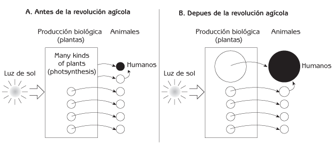
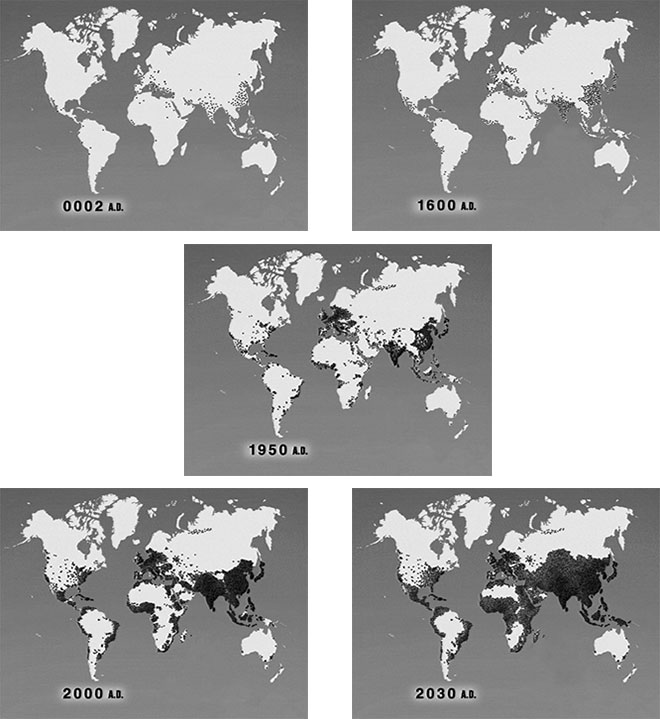
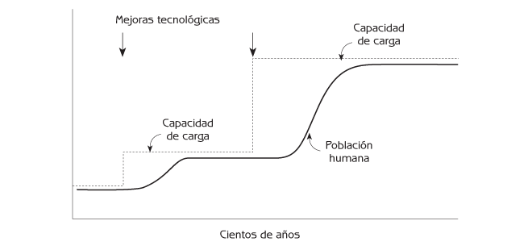
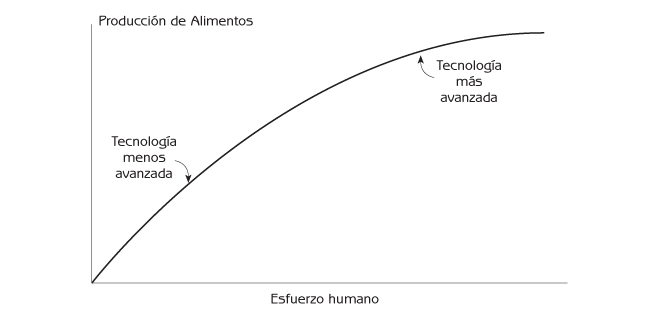
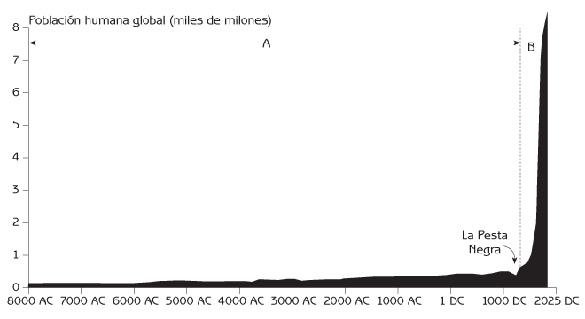
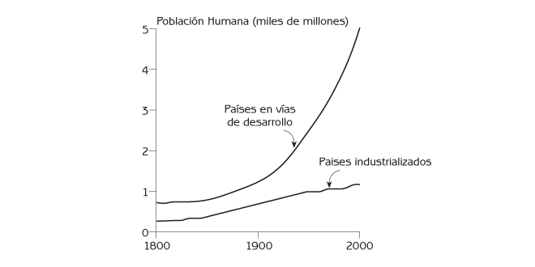
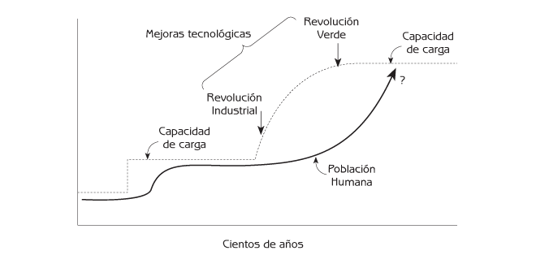
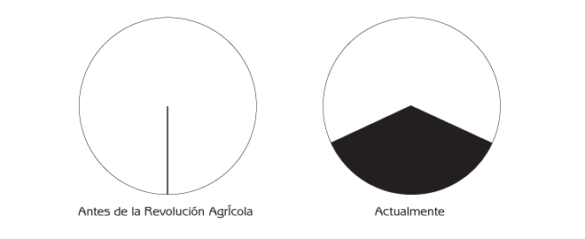
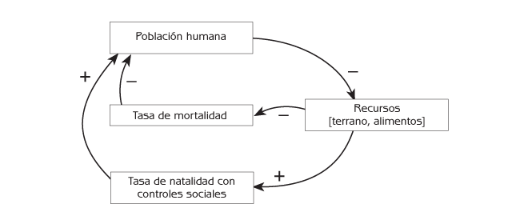

Ecología Humana
Conceptos Básicos para el Desarrollo Sustentable
Autor: Gerald G. Marten
Editorial: Earthscan Publications
Fecha de publicación: November 2001, 256 pp.
Edición en rústica: 1853837148
Edición en pasta dura: 185383713X
← Consulte el índice completo del libro.
Capítulo 3 La Población Humana
- Historia de la Población Humana
- Mecanismos Sociales de Regulación de la Población
- La Explosión Demográfica y la Calidad de Vida
- Puntos de Reflexión
De acuerdo con la evidencia arqueológica, los primeros seres humanos (Homo habilis) aparecieron en África hace unos tres millones de años. Utilizaron sencillas herramientas de piedra. Los humanos (Homo erectus) expandieron sus poblaciones a través de Europa y Asia hace cuando menos un millón de años. La especie humana moderna (Homo sapiens) apareció en África hace más o menos 1.3 millones de años, y permaneció únicamente en África durante muchos años. Homo sapiens extendió sus poblaciones a Europa, Asia y Australia hace unos 40,000 – 50,000 años. Los primeros humanos de que se tiene conocimiento en el Hemisferio Occidental llegaron de Asia hace aproximadamente 13,000 años.
Homo sapiens ha existido por lo menos durante unas 60,000 generaciones. La población humana total en el planeta fue probablemente menor a diez millones de personas durante casi todo ese tiempo. Hace alrededor de 10,000 años, el número de seres humanos empezó a crecer en ciertas partes del mundo, y este incremento continuó hasta hace 300 años. Hacia el año 1700 de nuestra era había alrededor de 600 millones de personas en el mundo. La población se ha multiplicado hasta llegar a seis mil millones de personas durante las 12 generaciones que han transcurrido desde 1700.
¿Por qué creció tan rápidamente la población humana durante los últimos siglos, después de crecer tan poco durante tanto tiempo? ¿La tecnología y la ciencia moderna han liberado a la especie humana de las regulaciones demográficas y las limitaciones a la capacidad de carga que se aplican a los demás animales? Este capítulo aporta una revisión de la historia demográfica humana, comenzando con la pequeña población de cazadores recolectores que constituyó la humanidad durante la mayor parte de su historia. Describe la expansión de la población humana a medida que la Revolución Agrícola se extendía por el mundo, y el aumento demográfico explosivo que siguió a la Revolución Industrial. El capítulo termina describiendo las implicaciones para el futuro.
Historia de la Población Humana
De la cacería y la recolección, a la agricultura
Las habilidades físicas y mentales de los humanos modernos – y su posición ecológica en el ecosistema – se formaron durante varios millones de años de evolución como cazadores recolectores. Los seres humanos vivieron en ecosistemas naturales que contenían muchas clases diferentes de plantas y animales, de las cuales solamente unas cuantas eran apropiadas como alimento para los humanos (Figura 3.1a). Con su tecnología de cacería y recolección, los humanos podían capturar únicamente una pequeña parte de la producción biológica total del ecosistema como alimentos para su consumo. La capacidad de carga para los humanos era similar a la de los demás animales, y las poblaciones humanas no eran mayores que las de otros animales. Los humanos probablemente consumían alrededor de 0.1 por ciento de la producción biológica de los ecosistemas que habitaban.
Esto cambió después de la Revolución Agrícola, que permitió a las personas crear sus propios pequeños ecosistemas para producir alimentos. La agricultura en su forma más simple apareció hace unos 12,000 años en el Medio Oriente. La gente estimuló a las plantas silvestres que utilizaba como alimento para que crecieran cerca de sus moradas, haciendo más fácil la recolección. Eventualmente domesticaron algunas de las plantas seleccionando especies individuales con características deseables, tales como partes comestibles más grandes, o más fáciles de procesar para el consumo. También domesticaron algunos de los animales silvestres que utilizaban como alimento. Así, las personas pudieron incrementar el porcentaje de la producción biológica del ecosistema que era accesible para el consumo humano (ver Figura 3.1b), y la capacidad de carga para los humanos aumentó.

Figura 3.1 Distribución de la producción biológica entre plantas y animales en la red alimenticia de un ecosistema.
La Revolución Agrícola comenzó en el Medio Oriente porque esa región era la que tenía la mayor cantidad de plantas y animales apropiados para la domesticación. Solamente unos cuantos cientos de plantas y unas pocas docenas de animales eran adecuadas para la domesticación en todo el mundo, y casi todas ellas fueron domesticadas hace cuando menos 5,000 años. No se ha domesticado ningún cultivo o animal importante en ninguna parte del mundo durante los últimos 5,000 años, y no se puede esperar que esto suceda en el futuro. Algunas partes del mundo, como Australia y el África sub-Sahariana, tenían muy pocas plantas o animales apropiados para la domesticación. En esas áreas, la agricultura sólo pudo comenzar después de que se importaron plantas y animales domésticos de otros lugares.
¿Por qué esperaron tanto los seres humanos para desarrollar la agricultura? El esfuerzo que las personas deben dedicar a formar y mantener ecosistemas agrícolas – preparar la tierra, sembrar los cultivos, cuidarlos, y protegerlos de las malas hierbas, insectos, y otros animales que quieren consumirlos – requiere mucho más trabajo humano que la cacería y la recolección. Es probable que las personas se encontraran satisfechas viviendo sin agricultura mientras no la necesitaron. Era conveniente dejar que la naturaleza hiciera el trabajo de producir alimentos. Sin embargo, los habitantes del Medio Oriente pueden haber sentido una fuerte necesidad de encontrar nuevas formas para hacerse de más alimentos hace unos 12,000 años, cuando un rápido cambio hacia un clima más árido redujo la producción biológica y la capacidad de carga humana del ecosistema de Medio Oriente.
A lo largo de un período de varios miles de años, la agricultura se extendió por el Medio Oriente, hacia Asia, África del Norte, y Europa, y surgió de manera independiente en China, América del Norte, Mesoamérica, Sudamérica y Nueva Guinea. Las poblaciones humanas crecieron en las áreas con agricultura (2 AD en la Figura 3.2). Aparecieron nuevas mejoras en la producción de alimentos en diferentes lugares y en momentos distintos, de manera que la capacidad de carga humana en cualquier lugar determinado creció en etapas (ver Figura 3.3). Cualquier nueva mejora significativa en la tecnología agrícola generaba un rápido incremento en la capacidad de carga, y en un período de siglos la población humana en esa región crecía hasta alcanzar la nueva capacidad de carga. Una vez que el crecimiento de la población resultaba imposible, la gente empezaba a sentir la presión de una disponibilidad de alimentos limitada. Esta presión, conocida como presión demográfica, motivaba a las personas a desarrollar mejoras adicionales en la tecnología agrícola, o a adaptar las prácticas agrícolas más productivas de los pueblos vecinos. Esto hacia que la capacidad de carga se elevara, y el ciclo ascendente de la población humana continuó como un circuito de retroalimentación positiva entre la población y la tecnología.

Figura 3.2 Crecimiento y distribución geográfica de la población humana durante los últimos 2,000 años. Fuente: Video “World Population” Zero Population Growth, Washington, DC. Nota: cada punto representa un millón de personas.
Los incrementos progresivos en la producción agrícola generalmente requerían un mayor esfuerzo para estructurar ecosistemas para que una mayor proporción de su producción biológica se canalizara al consumo humano (ver Figura 3.4). Este es el principio de ‘inexistencia de los almuerzos gratuitos’ (Nota del traductor: Esto se refiere a la traducción literal de la frase “there’s no such thing as a free lunch” en ingles, cuyo equivalente en español sería “nada es gratis en esta vida”). Toda elección tiene ventajas y desventajas. Toda ganancia tiene sus costos. Uno de los costos de tener más alimentos es una mayor carga laboral.

Figura 3.3 Esfuerzo humano requerido para las tecnologías de producción alimenticia con mayor rendimiento.
La población humana del planeta creció gradualmente durante más de 10,000 años después de la Revolución Agrícola (ver Figura 3.5A). Las poblaciones más grandes se encontraban en los grandes valles fluviales de la India y China. Durante este período hubo un incremento substancial de las poblaciones del Medio Oriente y Europa. La población mundial disminuyó 25 por ciento cuando la plaga conocida como la Peste Negra recorrió Asia y Europa durante el Siglo XIV, pero rápidamente volvió a alcanzar sus cifras anteriores durante el siglo siguiente. La gente de Europa estaba sintiendo la presión de una población que se encontraba en el límite de su capacidad de carga, pero la situación cambió en la medida en que las naciones europeas más poderosas emprendieron la colonización y el comercio globales durante el Siglo XVI. La disponibilidad de recursos incrementó la capacidad de carga de Europa, y la población europea empezó a crecer. La capacidad de carga creció aún más en la medida en que la Revolución Industrial ganó inercia durante el Siglo XVIII.

Figura 3.4 El esfuerzo humano requerido por tecnologías que incrementan la producción alimentaria.
La Revolución Industrial
La Revolución Industrial tuvo un fuerte impacto en la agricultura. Cultivos muy productivos como el trigo, maíz, papas (patatas), camotes (boniatos) y arroz, que anteriormente estaban restringidos a las regiones del mundo donde originaron, se extendieron rápidamente por el mundo gracias al colonialismo y comercio europeos, lo que dio a los agricultores un ‘menú’ más amplio de cultivos altamente productivos de dónde escoger. La mecanización otorgó a los agricultores la habilidad para estructurar ecosistemas más eficazmente de lo que había sido posible solamente con el trabajo humano y animal. La Revolución Industrial se vio acompañada por una revolución científica, así como por nuevas tecnologías agrícolas que incrementaron aún más la producción agrícola. Las personas se hicieron capaces de capturar un porcentaje mucho mayor de la producción biológica del ecosistema para su consumo, y creció la capacidad de carga. El aumento de la capacidad de carga desde la Revolución Industrial ha sido tan grande y tan continuo que la población humana del planeta ha podido crecer exponencialmente durante los últimos 250 años (ver Figura 3.5B).

Figura 3.5 Diez mil años de crecimiento de la población humana. Fuente: Adaptado de Population Reference Bureau (1984) World Population: Fundamentals of Growth, Population Reference Bureau, Washington, D.C.
Las tasas de nacimiento eran altas antes de la Revolución Industrial. Las familias numerosas contribuían a satisfacer las elevadas demandas de mano de obra de la vida rural y asegurar la supervivencia de hijos que cuidaran a sus padres en la vejez. Las mejoras en la salud pública que resultaron de la revolución científica redujeron considerablemente las tasas de mortalidad en los países en vías de industrialización. Sus poblaciones crecieron rápidamente, ya que sus tasas de nacimiento permanecieron elevadas. Al llegar el Siglo XIX, la urbanización y las mejoras en la supervivencia de los hijos hicieron que las familias numerosas no resultaran tan necesarias. Las tasas de nacimiento empezaron a disminuir a medida que la gente adoptaba diversos métodos para limitar el tamaño de las familias. Las poblaciones de las naciones industrializadas continuaron creciendo rápidamente durante el Siglo XIX y la mayor parte del XX (ver Figura 3.6; y comparar el año 1950 de nuestra era, con el 1600 que aparece en la Figura 3.2). No obstante, su crecimiento demográfico generado internamente era cercano a cero a finales del Siglo XX. Las poblaciones de algunas naciones industrializadas continúan creciendo, debido principalmente a la inmigración proveniente de otros países.
El ‘envejecimiento’ demográfico se ha convertido recientemente en un asunto prioritario para las naciones industrializadas. Hay un cambio de una población que crece rápidamente y tiene un alto porcentaje de personas jóvenes, a otra que crece despacio, o deja de crecer, y tiene un porcentaje elevado de personas mayores. Esto está reduciendo el número de jóvenes económicamente productivos en relación a las personas mayores jubiladas a las que éstos deben de mantener. El ‘envejecimiento’ está muy avanzado en Japón, ha comenzado en Europa y Norteamérica, y en unas cuantas décadas se convertirá en un asunto prioritario para las naciones en vías de desarrollo que están reduciendo su crecimiento demográfico. Algunas personas de los países cuya población ‘envejece’ han sugerido que deben incrementarse las tasas de nacimiento para que haya más jóvenes que mantengan a los ancianos – un curso de acción cuyos beneficios a corto plazo agravaría el problema de sobrepoblación a largo plazo, resultando en más ancianos que mantener en el futuro. Muchos países industrializados, como Japón, ya tienen poblaciones y niveles de consumo mucho mayores a los que pueden mantenerse con los recursos existentes dentro de sus propias fronteras. Apenas están conscientes del grado al que han excedido su capacidad de carga, ya que su posición económica privilegiada les permite recurrir a recursos extensos mas allá de sus fronteras.

Figura 3.6 Aumento en las poblaciones de países industrializados y en vías de desarrollo del 1800 al 2000. Fuente: Datos de Population Reference Buread, Washington, D.C.
Las poblaciones del mundo en vías de desarrollo comenzaron a crecer rápidamente durante el Siglo XX, cuando la salud pública moderna redujo las muertes, pero los nacimientos se mantuvieron elevados. La mayor parte del crecimiento de la población del mundo se encuentra actualmente en el mundo en desarrollo (ver Figura 3.5; y comparar el año 2000 de nuestra era con el de 1950 de la Figura 3.2). Una gran cantidad de personas está migrando de las partes más pobladas del mundo en vías de desarrollo en busca de mejores oportunidades económicas en Norteamérica, Europa y Australia. Los nacimientos empezaron a disminuir en algunas partes del mundo en vías de desarrollo hace unos 20 años, pero permanecen elevados en muchas áreas. Aún si los nacimientos disminuyen considerablemente, la población del mundo en vías de desarrollo continuará creciendo por varias generaciones (2030 en la Figura 3.2). Las poblaciones del mundo en vías de desarrollo tienen un porcentaje tan grande de personas jóvenes que, aún con familias más pequeñas, el número de nacimientos del gran número de personas en edad reproductiva excederá con mucho al pequeño número de ancianos que morirá.
La Revolución Verde
El incremento más reciente de la capacidad de carga humana comenzó hace unos 40 años con la Revolución Verde, que utilizó técnicas modernas de reproducción de plantas para crear variedades de alto rendimiento de arroz, trigo, maíz y otros cultivos para elevar la producción de alimentos para la población de crecimiento acelerado en el mundo en vías de desarrollo (ver Figura 3.7). Los rendimientos más grandes sólo eran posibles para las nuevas variedades bajo condiciones ideales para el crecimiento, tales como abundancia de agua, aplicaciones óptimas de fertilizantes, y la utilización de plaguicidas químicos para reducir el daño a los cultivos. La irrigación se expandió a una escala masiva, particularmente en las regiones semiáridas. La irrigación no solamente proporcionó el agua necesaria para obtener mayores rendimientos, sino que también permitió a los agricultores cultivar una cosecha adicional durante la temporada de sequía. Algunas de las nuevas variedades se diseñaron para madurar rápidamente, de manera que los agricultores pudieran habilitar varias cosechas en un año. Una mayor producción de alimentos significaba más trabajo – ‘nada es gratis’. Mientras que la agricultura moderna utiliza maquinaria impulsada por combustibles derivados del petróleo para hacer el trabajo, muchas familias del mundo en desarrollo, que carecen de mecanización, deben trabajar largas y difíciles jornadas para producir alimento suficiente en la pequeña porción de tierra que tienen disponible.

Figura 3.7 Aumento en la capacidad de carga y de la población humana desde la Revolución Industrial.
Los seres humanos han incrementado su capacidad de carga más de 1,000 veces desde la Revolución Agrícola, canalizando porcentajes cada vez mayores de la producción biológica de la tierra hacia el consumo humano. ¿Podemos esperar otra revolución en la tecnología agrícola para incrementar la capacidad de carga a niveles aún más altos de los que tiene actualmente? La respuesta bien podría ser que no. Serán posibles aumentos moderados en la producción de alimentos a través de una implementación más completa de la Revolución Verde, especialmente en África. Los cultivos y ganados genéticamente modificados podrían incrementar la producción de alimentos hasta en 20 por ciento más allá de las ganancias que resultaron de la Revolución Verde. Nadie sabe si habrá avances imprevistos en la tecnología agrícola que permitan aumentos en la producción de alimentos más allá de nuestra imaginación, pero el futuro no parece ofrecer mayores incrementos con las tecnologías con que se cuenta actualmente.
Muchos de los logros alcanzados durante las décadas recientes podrían resultar insostenibles. Buena parte del incremento en la producción de alimentos se ha debido a la expansión de la agricultura sobre tierras que no resultan apropiadas para el uso agrícola a largo plazo, o a la irrigación proveniente de mantos freáticos que pronto se verán agotados. Los costos ambientales de estos logros pueden ser elevados. Los insumos intensivos de fertilizantes químicos y los plaguicidas para la Revolución Verde contaminan el agua afluente de las granjas. Los cultivos o ganados genéticamente modificados podrían tener efectos lesivos no anticipados sobre la salud humana o el medio ambiente. Recientemente se descubrió que el polen del maíz que había sido genéticamente modificado para matar plagas de insectos puede desplazarse fuera de los maizales y matar mariposas.

Figura 3.8 Porcentaje aproximado de la producción biológica del planeta controlada por humanos.
Los logros de la producción agrícola del pasado se han conseguido principalmente aumentando nuestra porción de la producción biológica de la Tierra (ver Figura 3.8), y no aumentando la producción biológica en sí. Incrementar de manera significativa la producción biológica de la Tierra, que depende fundamentalmente de los climas regionales y la cantidad de luz solar que llega al planeta, está más allá de la habilidad de los seres humanos. Tampoco hay mucho margen adicional para incrementar el porcentaje destinado al consumo humano, ya que controlamos cerca de la mitad de la producción biológica terrestre del planeta. Nadie sabe exactamente cuanta gente puede mantener el planeta de manera sustentable, pero es claro que hay un límite, y la población humana parece estar acercándose a él.
Mecanismos Sociales de Regulación de la Población
La población de ciervos de la que se habló en el Capítulo 2 estaba limitada por la disponibilidad de alimento. Si las poblaciones animales están limitadas por la disponibilidad de alimento, ¿por qué la mayoría de los animales silvestres parece saludable y bien nutrida? La respuesta radica en el hecho de que muchas poblaciones animales se encuentran por debajo de la capacidad de carga de su medio ambiente. La capacidad de carga es un límite superior que la disponibilidad de alimento impone a todas las poblaciones; pero es común que las poblaciones se vean reguladas por debajo de los límites de disponibilidad de alimento por fuerzas ecológicas distintas a la desnutrición y la inanición. Depredadores como los lobos y pumas matan ciervos, reduciendo el tamaño de sus poblaciones por debajo de su capacidad de carga. Donde hay depredadores, los ciervos se encuentran con alimento en abundancia y están saludables. Por desgracia, la gente ha exterminado a estos depredadores en muchas regiones porque los depredadores grandes también matan al ganado. Donde no hay depredadores es común ver ciervos tan numerosos que muchos de ellos mueren de hambre durante el invierno, cuando la disponibilidad de su alimento es menor.
La depredación no es la única manera en que las poblaciones animales se ven reguladas por debajo de los límites que les impone la disponibilidad de alimento. Muchos animales tienen mecanismos sociales para prevenir la sobrepoblación. Cuando las aves seleccionan parejas para reproducirse, cada pareja de reproductores establece un territorio de donde excluye a todas las demás aves de su misma especie. Como consecuencia de la evolución, los territorios de las aves tienen un tamaño suficiente como para proporcionar suficiente alimento para la pareja reproductora y sus crías. Si no hay bastante espacio como para permitir un territorio adecuado para todas las aves de la población, las aves en exceso no obtienen un territorio y no se reproducen. Además, las aves tienen mecanismos fisiológicos de retroalimentación para reducir su producción de huevos cuando escasea el alimento. Algunas especies de aves incluso parecen tener exhibiciones sociales para evaluar su población, con respuestas hormonales a las exhibiciones, que reducen la producción de huevos si la población es demasiado grande.
Muchos otros animales, incluso los seres humanos, tienen mecanismos parecidos para mantener sus poblaciones dentro de los límites impuestos por la disponibilidad de su alimento. Los orígenes evolutivos de la territorialidad humana, y su función en la regulación de la población en las sociedades humanas puede verse en la conducta social de los monos y simios que viven en grupos y excluyen a todos los demás individuos de su especie de sus territorios. Aunque la organización social detallada de los monos y los simios varía enormemente de una especie a otra, es común que los machos sean hostiles cuando se encuentran con miembros de otros grupos, matando a las crías del otro grupo si encuentran la oportunidad. Cuando el alimento es abundante, las hembras con crías tienden a quedarse en el centro de su territorio, donde se encuentran a salvo de encuentros peligrosos con grupos vecinos. Sin embargo, en tiempos de escasez, las hembras se pueden ver forzadas a buscar alimento cerca al borde de su territorio, donde sus crías son vulnerables. Además, las hembras bajo presión frecuentemente descuidan a sus crías. En consecuencia, las muertes infantiles tienden a crecer cuando hay demasiados individuos para los recursos alimentarios del territorio, y la población disminuye. Esto es un circuito de retroalimentación negativa que mantiene a la población dentro de los límites de su disponibilidad de alimento.
La Figura 3.9 muestra cómo las sociedades humanas tradicionales han utilizado la retroalimentación negativa para mantener sus poblaciones por debajo de la capacidad de carga, de manera que no sean reguladas por la inanición. Cuando las poblaciones humanas crecen hasta alcanzar tamaños cercanos a su capacidad de carga, es común que la tierra, los alimentos, el agua para riego u otros recursos se vuelvan escasos. Un incremento de la población conduce a una disminución de los recursos. Esto lleva a que se realicen acciones humanas que reducen la población disminuyendo los nacimientos o incrementando el número de muertes (generalmente muertes de infantes). En muchas sociedades, particularmente en islas, el circuito de retroalimentación de la Figura 3.9 ha sido establecido a conciencia. En otras sociedades, los mecanismos para reducir el número de nacimientos pueden haber formado parte del tejido cultural sin que haya existido una conexión consciente con la población y la capacidad de carga. No importa cuáles sean los detalles, el circuito de retroalimentación negativa ha sido poderoso. Las tasas de mortalidad altas – basadas en la imagen de que la vida de los seres humanos primitivos fue ‘corta y brutal’ – no son suficientes para explicar el crecimiento infinitesimalmente lento de la población humana durante más de 50,000 generaciones.

Figura 3.9 Circuitos de retroalimentación negativa para el control de la población humana.
Los seres humanos del pasado sobrevivieron en territorios de pequeña escala. Muchas sociedades tradicionales tienen hoy en día territorios de dimensiones semejantes a los de entonces. Los habitantes de territorios de pequeña escala tienen un conocimiento detallado de su área y del número de personas que puede mantener, y emplean métodos tradicionales de control natal para hacer que su población se mantenga dentro de esos límites. Amamantar es una contribución importante al control natal, ya que generalmente las mujeres no son fértiles durante el período en el que están dando pecho a un infante, y en algunas culturas duermen aparte de sus maridos durante ese tiempo. La costumbre tradicional de amamantar a un infante durante tres o cuatro años proporciona un espaciamiento natural entre los hijos. Por desgracia, esta costumbre está desapareciendo en la medida en que las madres modernas alimentan a sus hijos con biberón en lugar de amamantarlos.
La regulación tradicional de la población también está respaldada por la estructura del matrimonio de algunas sociedades. Por ejemplo, el esposo en una sociedad poligámica, una forma común de organización social tradicional humana, puede rotar la actividad sexual entre sus esposas de manera que cada una de ellas se embarace únicamente una vez cada dos o tres años. Las costumbres tradicionales de herencia en las sociedades monógamas pueden tener un efecto importante sobre las tasas de matrimonios y nacimientos. Por ejemplo, en algunas culturas era una práctica común el heredar a un solo hijo la propiedad familiar. Un hijo con herencia podía costear su matrimonio, pero los demás hijos, sin ella, no podían hacerlo. Esto generaba un fondo de mujeres solteras, que tenían muchos menos hijos que las casadas – de la misma manera que lo que sucede con las aves, que no se reproducen si no pueden asegurar un territorio.
Las sociedades tradicionales utilizan hierbas locales para evitar el embarazo o inducir el aborto. El infanticidio era común en todo el mundo hasta el Siglo XX, y todavía es frecuente en algunas regiones. Las personas matan a los infantes no deseados para espaciar sus hijos o cuando son incapaces de cuidarlos debido a la pobreza o la escasez de alimentos. Debido a que en muchas culturas las niñas tienen menos valor social que los niños, el infanticidio se dirige principalmente a las hembras, una práctica que reduce la capacidad reproductiva de la generación siguiente de manera más efectiva que el infanticidio de los machos. Con los recientes avances para identificar el sexo de los niños antes del nacimiento, en algunas regiones también se dirige el aborto hacia las hembras. Los métodos anticonceptivos modernos ofrecen actualmente alternativas atractivas al aborto y al infanticidio como métodos de planificación familiar.
Los conflictos territoriales han jugado desde hace mucho un papel importante en la regulación de las poblaciones humanas. Por ejemplo, si los habitantes de un poblado están forzando los límites de sus recursos (acercándose por ejemplo a una carencia de alimentos, tierra, o agua para riego), puede tratar de utilizar los recursos de un poblado vecino, o recursos sujetos a disputas de propiedad cercanos a los límites del poblado. Esto puede desencadenar una serie de efectos que reducen los nacimientos. Las emociones pueden ser intensas durante los conflictos territoriales de los poblados. La violencia no es inusual, aunque generalmente no hay muchas muertes. El número de nacimientos suele disminuir durante los conflictos territoriales de todas las sociedades, tanto tradicionales como modernas, ya que las parejas esperan que lleguen ‘tiempos mejores’. Algunas sociedades tradicionales prohíben la actividad sexual durante los períodos de conflicto.
La territorialidad sigue siendo una parte significativa del comportamiento humano en el mundo moderno, donde los territorios más importantes son las naciones. Sin embargo, la mayoría de las naciones son demasiado grandes como para presentar los circuitos de retroalimentación negativa entre el tamaño de la población y la capacidad de carga que podrían presentar los territorios de menor escala en el pasado. La capacidad de carga de una nación entera no es obvia para nadie, especialmente si esa nación importa grandes cantidades de alimentos del exterior. En lugar de mantener el tamaño de sus poblaciones dentro de ciertos límites las naciones modernas frecuentemente han fomentado el crecimiento demográfico debido a las ventajas militares que ofrece el tener una población más grande. El comportamiento territorial se vuelve más perverso que funcional cuando las naciones hacen uso de armamento moderno y ejércitos bien organizados para intensificar los conflictos territoriales hasta que se convierten en guerras que matan a miles o incluso millones de personas sin proporcionar los beneficios ecológicos que la territorialidad tenía en el pasado.
La Explosión Demográfica y la Calidad de Vida
La calidad de vida de la masiva población humana de la actualidad se encuentra severamente limitada por la capacidad finita de los ecosistemas para proporcionar alimentos y otros recursos esenciales para el uso humano. Los recursos de suelo y agua del planeta Tierra son sencillamente insuficientes para tanta gente. El crecimiento urbano acelerado de las décadas recientes ha resultado en exigencias muy severas sobre los materiales y servicios provenientes de los ecosistemas circundantes. Las consecuencias son particularmente graves en muchas ciudades del mundo en vías de desarrollo, que han ido retrasándose sin remedio en la dotación de vivienda, el suministro seguro de agua, la recolección de residuos sólidos, la disposición final de aguas residuales, y otros servicios básicos para sus poblaciones en expansión. Los prospectos de un mejor futuro están disminuyendo rápidamente a medida que la población creciente continúa creciendo a tasas alarmantes.
La consecuencia más grave de la sobrepoblación humana es la onerosa demanda de alimentos sobre los ecosistemas. No hay comida suficiente para todos cuando una población rebasa su capacidad de carga (ver Figura 2.11) – este es un problema que no puede resolverse del todo mediante una distribución de alimentos más equitativa. La situación se puede deteriorar cuando la sobrepoblación detona una cadena de efectos a través de los ecosistemas y los sistemas sociales que reduce la capacidad de carga en lugar de incrementarla. Esto puede ocurrir cuando la escasez de comida obliga a las personas a producir más alimentos sembrando cultivos o pastoreando ganado en suelos que no son adecuados y con una intensidad que el suelo no puede sostener. La erosión, el agotamiento de la fertilidad de los suelos, la acumulación de químicos tóxicos, y muchas otras formas de daños a los suelos pueden ocasionar que la producción de alimentos – y la capacidad de carga – disminuyan en un círculo vicioso (un circuito de retroalimentación positiva) de suministro inadecuado de alimentos y uso inadecuado del suelo.
Cuando esto sucede, es común que las personas emigren a otra región con mejores condiciones. Actualmente, el mundo en vías de desarrollo tiene millones de refugiados ambientales que emigran a las ciudades porque ya no pueden sobrevivir en las áreas rurales donde sus familias han vivido por generaciones. Si las personas no pueden emigrar, y carecen de la riqueza necesaria para adquirir alimentos en otros lugares, la malnutrición aumenta el número de muertes (especialmente entre los niños más pequeños), y la población disminuye de una manera muy similar a la de una población de ciervos que rebasa su capacidad de carga. Este sombrío panorama no es hipotético. Ha acontecido miles de veces a escala local en el pasado, y ha sucedido más recientemente en Corea del Norte y en varias partes de África. Hoy en día hay una espiral descendiente de hambre y degradación del suelo en las regiones montañosas de Asia donde hay demasiadas personas ocupando tierras con un potencial limitado para la producción de alimentos.
Aún donde el hambre no es un problema, los costos sociales de tener que producir más alimentos van más allá de lo que se podría haber pensado. Las variedades de alto rendimiento requieren mayores gastos en fertilizantes químicos y plaguicidas que las variedades tradicionales localmente adaptadas que los campesinos utilizaban antes de la Revolución Verde. Los gastos valen la pena si los rendimientos son lo suficientemente altos, pero los gastos elevados también pueden llevar a los agricultores a endeudarse. La equidad económica ha disminuido en todo el mundo a medida que los agricultores pierden sus tierras debido al endeudamiento, y los agricultores más ricos o las corporaciones agrícolas adquieren más tierras. Otro costo social de producir grandes cantidades de alimentos proviene del hecho de que buena parte del incremento de la producción de alimentos de la Revolución Verde se alcanza con un mayor número de ciclos agrícolas por año. Esto tiene como resultado más trabajo, con consecuencias dramáticas para el sistema social. La gran demanda laboral de la agricultura de la Revolución Verde deja menos tiempo para las actividades comunitarias. Hay menos tiempo para ayudar a los vecinos durante los períodos pico de trabajo, menos tiempo para proyectos comunitarios como el mantenimiento de terrazas o canales para riego, o para la construcción de viviendas para los recién casados (donde todavía existe esta costumbre), y menos tiempo para los festivales religiosos o de otro tipo, que contribuyen a la solidaridad comunitaria.
La sobrepoblación incrementa la competencia por recursos ya limitados. Hoy en día son frecuentes las disputas por el acceso a recursos compartidos; por ejemplo, el agua para riego o la energía hidroeléctrica proveniente de ríos que fluyen a través de varios países, o los recursos marinos que se encuentran en ‘zonas económicas exclusivas’ o “mar patrimonial” (a menos de 320 kilómetros de distancia de la línea de costa) de más de una nación. Las disputas que surgen alrededor de recursos naturales valiosos han ocasionado muchas guerras en el pasado y puede esperarse que causen más en el futuro a medida que la competencia por obtener los recursos limitados se intensifique. Sin embargo, la principal fuente de violencia en la actualidad es el conflicto entre grupos étnicos distintos que compiten sobre los mismos recursos dentro de algunas naciones. Las guerras por la autonomía regional o la independencia han proliferado por muchas partes del mundo en años recientes. Uno de las principales contiendas en estos conflictos es si los recursos serán controlados por los grupos étnicos mayoritarios o por la elite en el poder que controla la nación – o por poblaciones regionales que habitan el área.
¿Qué podemos hacer acerca de la población demográfica? El mensaje más importante de este capítulo ha sido que la población humana de la Tierra está acercándose muy rápidamente a su capacidad de carga, sin que exista la esperanza de que haya un incremento importante de esta capacidad en el futuro previsible. Aunque la gente estaría dispuesta a hacer lo mejor posible para mantener la población cómodamente dentro de los límites actuales de la capacidad de carga, la inercia de la explosión demográfica hace que esa elección sea imposible por lo pronto. Lo más que podemos esperar es que disminuya la velocidad del crecimiento de la población tan rápidamente como sea posible. Dado que la mayor parte del crecimiento demográfico se encuentra actualmente en el mundo en vías de desarrollo, la clave para detener la explosión demográfica se encuentra en esa región.
Existe la creencia popular de que el crecimiento económico debe preceder a la disminución de la natalidad del mundo en vías de desarrollo, tal como pareció suceder con del desarrollo económico de las naciones industrializadas. Sin embargo, hay estudios recientes que muestran que la disminución de las tasas de natalidad en Europa se asoció más al acceso a los mecanismos de control natal y a los cambios de actitud acerca del tamaño de la familia y la aceptación social de la utilización de métodos de control natal. Las tendencias recientes en algunos países del mundo en vías de desarrollo han mostrado lo mismo. Mientras que el desarrollo económico y la educación, especialmente de las mujeres, pueden contribuir a reducir las tasas de natalidad, no es necesario esperar a que se den estas condiciones. Muchas mujeres del mundo en vías de desarrollo, ricas y pobres, quieren tener familias pequeñas a través del acceso inmediato a la planificación familiar. Su principal necesidad radica en el acceso a los métodos modernos de control natal y a información robusta acerca de cómo utilizarlos.
Puntos de Reflexión
- Encuentre cuál era la población humana de su nación hace 100 años. ¿Cuál es la población actual? ¿Cuáles son las tasas de natalidad y mortalidad? ¿Cómo se comparan las tasas actuales de natalidad y mortalidad con las de hace 100 años?
- ¿Cuántas personas cree usted que puede sostener el área (o la nación) donde vive? ¿Cree que su comunidad tiene pocas personas o demasiadas? ¿O justo las adecuadas? ¿Y qué dice de su país? ¿Cuáles son las ventajas y desventajas de tener más o menos personas? ¿Cuáles son las conexiones entre el número de personas y la calidad de vida?
- Las poblaciones que envejecen son una preocupación importante para las naciones industrializadas de la actualidad. Existe una tendencia hacia un mayor número de personas jubiladas que son mantenidas por un número cada vez menor de personas en edad de trabajar. Algunas naciones están considerando establecer políticas para estimular una tasa de natalidad más elevada para contar con una fuerza laboral más numerosa. ¿Piensa usted que esto es una buena idea? ¿Puede pensar en otras formas para enfrentar el problema del envejecimiento?
- ¿Qué sucede cuando las poblaciones humanas rebasan su capacidad de carga? ¿Puede usted pensar en ejemplos concretos?
- Millones de ‘refugiados económicos’ se desplazan de las naciones pobres a las ricas todos los años. Algunos ciudadanos de las naciones ricas piensan que la inmigración debiera ser controlada estrictamente. Otras personas piensan que debería haber un libre movimiento de personas por todo el mundo. ¿Usted qué piensa? ¿Cuáles son las ventajas y desventajas de cada una de estas políticas?
- ¿Las naciones ricas que han controlado el crecimiento de sus poblaciones deberían proporcionar asistencia alimenticia a las naciones pobres con altas tasas de crecimiento demográfico? ¿Las naciones ricas deberían proporcionar algún otro tipo de asistencia a las naciones que no cuentan con suficientes alimentos?